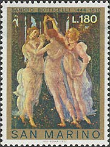
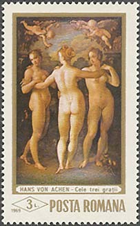
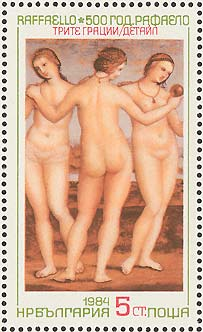
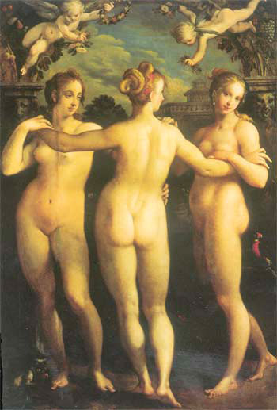
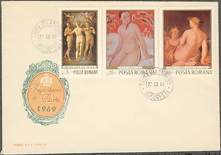
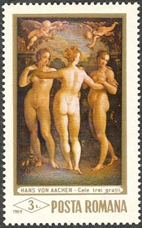
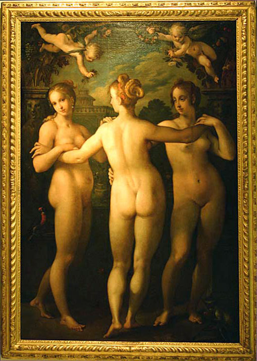

| The National Museum of Art of Romania The Three Graces |
Hans von Aachen's, the renowned German mannerist draftsman and painter was born 1552 and he died 1615. He firstly trained with a minor painter in his native Cologne; he took his name from his father's hometown. He probably joined the Cologne painters' guild before leaving for Italy around 1574.
After a stay in Venice, von Aachen was soon in Rome, learning from a circle of Northern European artists. He also painted portraits in Florence. Back in Germany by 1587, he began to gain fame for history pictures and psychologically sensitive portraits.
In 1592 Emperor Rudolf II of Prague named von Aachen imperial painter in absentia. Four years later he moved to Prague, serving as painter, art dealer, and diplomat, while also completing commissions for clients in Munich and Augsburg. He frequently journeyed abroad on diplomatic missions and to purchase pictures for his insatiable patron. After Rudolf's death in 1612, von Aachen worked for his successor, Emperor Matthias.
Von Aachen's Prague paintings reflect Rudolf's desire for sensuality, with smoothly modeled, elongated figures arranged in elegant poses, often including a nude woman seen from behind. His style combined an idealization indebted to Roman and Florentine Mannerism with brilliant Venetian color and Dutch realism. The many engravings published after his designs spread von Aachen's influence.
 |
 |
 |
The Three Graces painting displays many of the salient stylistic features which recommend Hans von Aachen as one of the representatives of the manerism typical of the so-called School of Prague developed during the rule of Rudolph II. According to documentary sources, the picture here was completed in 1604 or shortly before this date.

The composition, which is of ample scale, betrays an Italian influence along with that of Bartholomeus Spranger. lt relies on a theme often approached by Hans von Aachen, whose interest in mythological and allegorical subjects is manifest in many paintings. A sketch for the canvas here, now with the Graphische Sammlung Albertina in Vienna (formerly attributed to Allesandro Varotari), made it possible to identify Hans von Aachen as the author of this picture. (After Georgiana Stanciu).

The stamp was issued on March 27, 1969, in a set of six stamps, in big format. The print run of the stamp was of 450,000 pieces. The stamps were designed by the known stamp artist Ion Dumitrana.
 |
The name of the painter is improperly written on the stamp as Hans von Achen, instead of Hans von Aachen.. Even more, the image is flipped horizontally, as opposed to the original painting. For this reasons, by using the means of modern image processing, the author of this site has corrected the stamp, and displays it in the form in which it should actually appear. The art is not in presenting the things as they are, but as they should be (the motto of the Romanticism movement).
The stamps above, in the first row, that show similar works by Raphael and Botticelli, are presented for comparison purposes.

Mea culpa. I have revisited the European Art section of the museum this year (2004), after a long time. Please tale a look at the picture that I have taken then. You will notice that the stamps reproduces actually correctly the picture. It was the reproduction in the "Guide of the Collections" that appears flipped horizontally in this book! In the future I'll try to double check before to assert that I have found an error. As for the name of the artist, it appears, unfortunately, incorrectly spelled on the Romanian stamp.
For some supplementary information please move the mouse pointer over the images.
| Published:
07/06/2002. Revised: 03/04/10 . Copyright © 2002 - 2010 by Victor Manta, Switzerland. All rights reserved worldwide. |